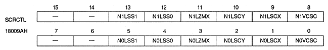

Line scroll interval bit : Line scroll select bit (N0LSS1, N0LSS0, N1LSS1, N1LSS0)
| N0LSS1, N0LSS0 | 18009AH | bits 5,4 | NBG0 For |
| N1LSS1, N1LSS0 | 18009AH | Bit 13,12 | For NBG1 |
| NxLSS1 | NxLSS0 | Interlace settings | ||
| Non-interlaced | Single-dense interlaced | Double-dense interlaced | ||
| 0 | 0 | For each line | For every two lines | 1 Every line |
| 0 | 1 | every 2 lines | every 4 lines | 2 Every line |
| 1 | 0 | every 4 lines | every 8 lines | 4 Every line |
| 1 | 1 | every 8 lines | every 16 lines | 8 Every line |
When reading the data of the line scroll table at intervals of 2 lines or more, the line scroll data read before that is used for the horizontal screen scroll value and the horizontal coordinate increment of the lines that are not read. The vertical screen scroll value is calculated from the previously read line scroll data and the value of the vertical coordinate increment register.